|
Roda JC - FC Groningen (5-1) 4 december 2004
|
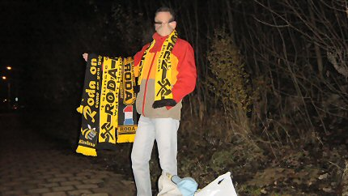
Op weg naar het stadion staat daar plots de Sjah La Mahn !!
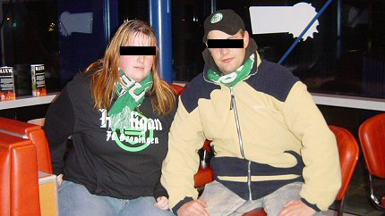
Een Hooligirl en een webman in de Burger King.
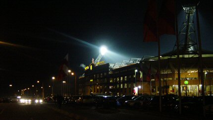
De kersster staat al op het PLS
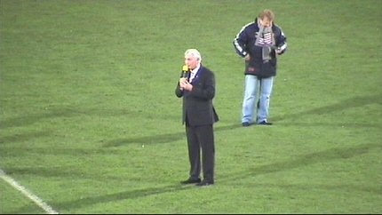
Voorzitter Serve Kuijer deelt mee dat de ZUIDTRIBUNE ter nagedachtenis
van de ruim een jaar geleden overleden oud-voorzitter, Theo Pickée, de
THEO PICKEE-TRIBUNE gaat heten. Het publiek beantwoordt deze
beslissing met een warm applaus.
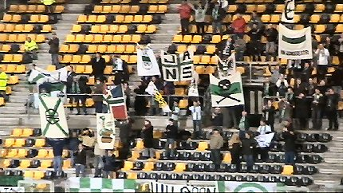
Ongeveer 100 Groningensupporters met veel banners en spandoeken.
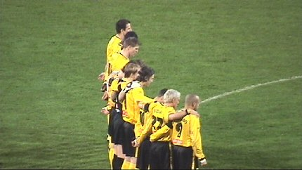
Een minuut stilte vanwege het overlijden van prins Bernhard.
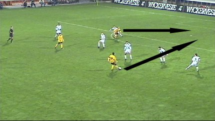
Kone speelt de bal naar Cristiano die net niet buitenspel staat.
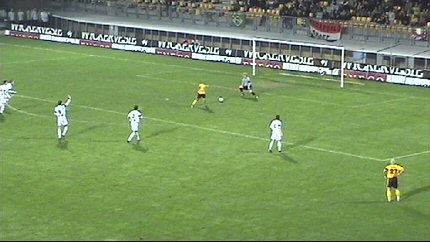
Deze poortert ex-Roda doelman Roorda: 1-0, (15').
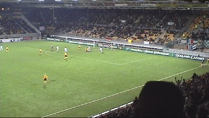
In de 23e min. wordt de doorgebroken Cristiano gehinderd door Roorda.
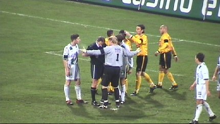
Van Egmond kon niet anders dan een penalty geven en overeenkomstig de
regels rood trekken.
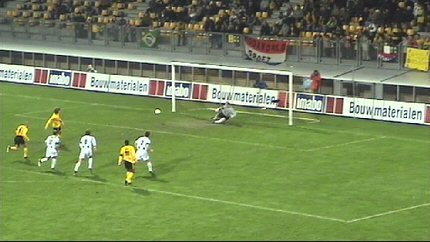
Van Dijk verzilvert de strafschop met een slap maar geplaatst schot in de
linkerhoek: 2-0, (25').
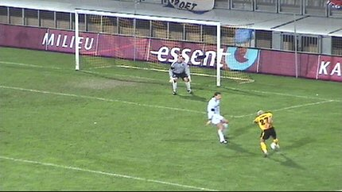
Op rechts stond Bodnar vrijwel de gehele wedstrijd vrij. De Hongaar werkte
als een molenpaard, scoorde tweemaal maar moet nog zuiver leren passen.
Hier drukt hij keihard af; een echte Bodnar-kogel.
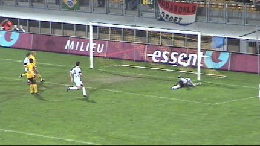
Tweede doelman Lambers ziet de bal inslaan in de korte hoek: 3-0, (38').
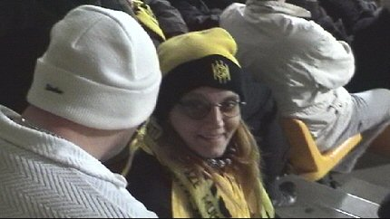
Man in witte trui en wit mutsje scout nieuwe Rodagirls.
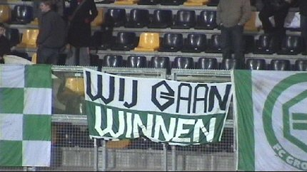
....maar nu even niet :-))
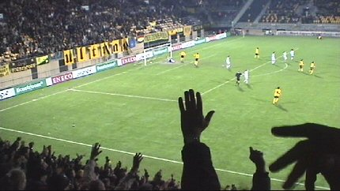
Bodnar heeft middels een kanonskogel 4-0 gescoord, (52').
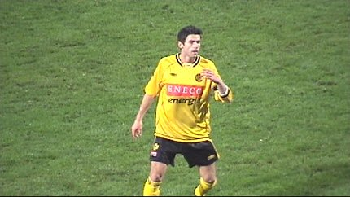
Dit plaatje is speciaal voor de Colinetgirls. Jerommeke mag sinds lange
tijd weer eens meedoen in het eerste. Hij vervangt hier Luijpers.
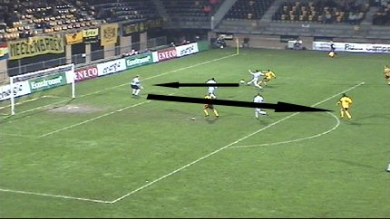
Kone schiet op doel. Lambers stompt de bal weg. Uit deze rebound kan
Colinet 5-0 scoren: (60').
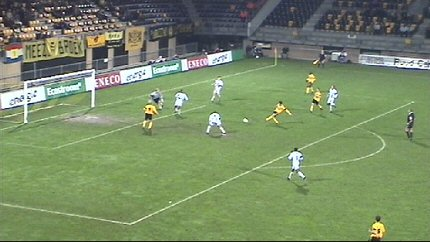
Een leuke binnenkomer voor deze jonge knaap. Tot dit moment is Roda JC
versus Groningen een schiettent. Een monsterscore ligt binnen bereik maar
veel kansen worden gemist. Bovendien krijgt Groningen steeds meer vat op
de wedstrijd, zeker nadat Kone en Bodnar vervangen worden door Cissé en
Roemgens.
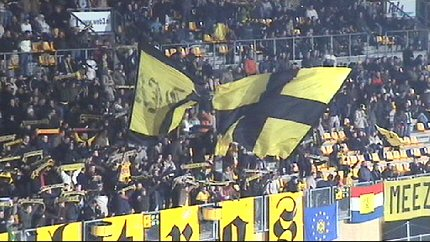
Toch nog een beetje sfeer in het koude en halfvolle stadion. Dit jaar was er
voor het eerst in tijden geen Sinterklaas bij de aftrap. Maar evengoed een
heerlijk avondje....
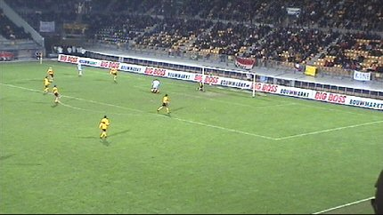
Roda verslapte steeds meer en in de 79e min. wordt dat afgestraft door
Van Gessel die hier 1-5 scoort.
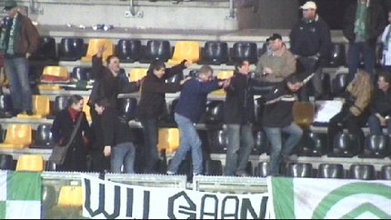
En dan wil je wel een feestje bouwen!
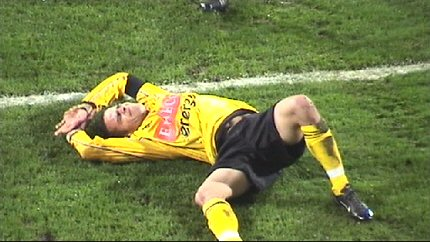
Sergio ligt aangeslagen buiten de lijn. Norbert lapt hem vakkundig op.
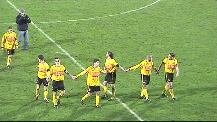
Eindelijk wint Roda weer eens een wedstrijd.
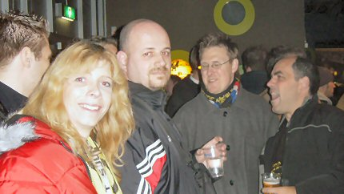
In de Kick Off mogen we de Hanebretboys eens begroeten. In Engeland
zijn ze inmiddels beter bekend als de Beer Quaffers.
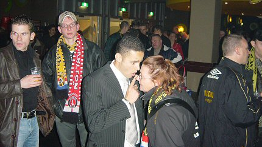
Sergio en Budziak kwamen de Kick Off bezoeken.
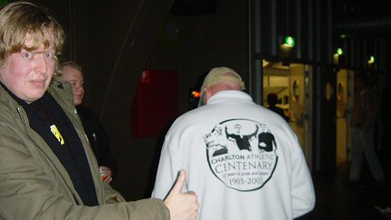
Grafiker keurt centenary sweater goed.
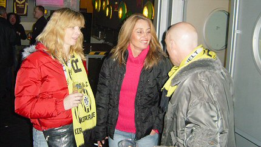
Marisa (midden) was voor het eerst bij Roda en dat beviel haar/onsgoed!
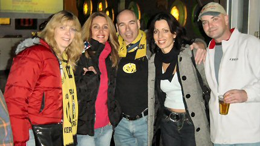
Tot slot van deze plezante avond, een kleine groepsfoto.
© Koempels Pleasure Dome
|